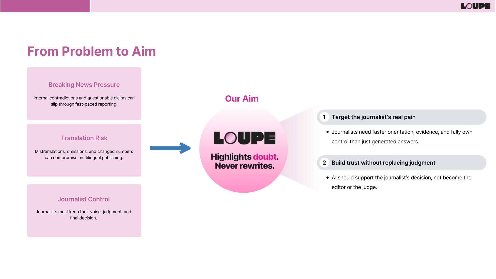
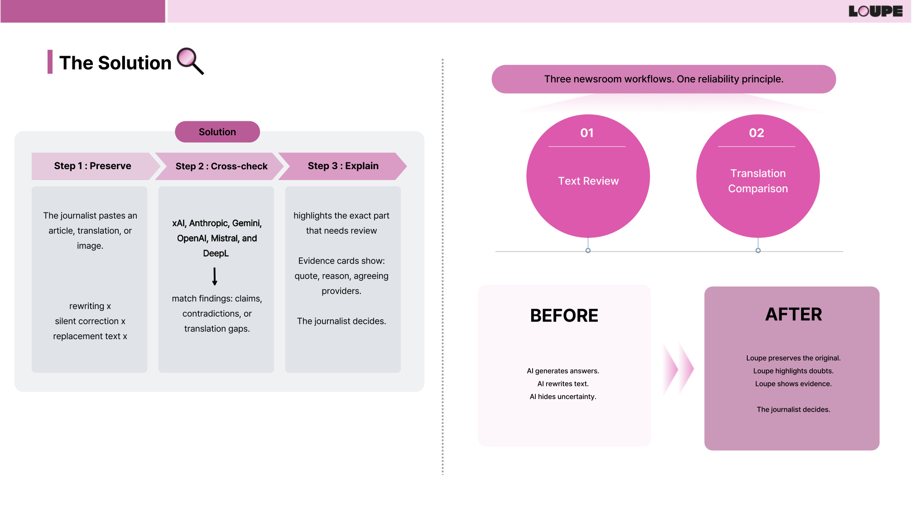

LoupeLoupe
의심을 드러내고, 판단은 기자에게.Highlight doubt. Preserve human judgment.

프로젝트 개요 · 참여Overview & contribution
기사와 번역의 의심 구간을 AI로 교차 검증하고 근거를 제시하는 저널리즘 지원 도구. 서비스 기획, UX/UI 설계 및 개발을 담당했습니다.A journalism tool that cross-checks articles and translations with AI and surfaces evidence for review. I worked on service planning, UX/UI design, and development.
구현과 접근Approach & implementation
원문을 유지한 채 검토가 필요한 구간을 표시하고 인용문·이유·모델 간 일치 내용을 근거 카드로 제공합니다. 기사 검토와 번역 비교를 통해 기자의 최종 판단을 지원합니다. EPITECH Paris 미디어 프로그램의 다국적 팀 해커톤에서 제작했습니다.Loupe preserves original text and marks passages for review, with evidence cards containing quotations, reasoning, and agreement across providers. Text review and translation comparison support the journalist’s final decision. Developed in a multinational hackathon team during the EPITECH Paris media program.
시각자료 · 데모Visuals & demo
프로젝트 시연 영상Project demo

